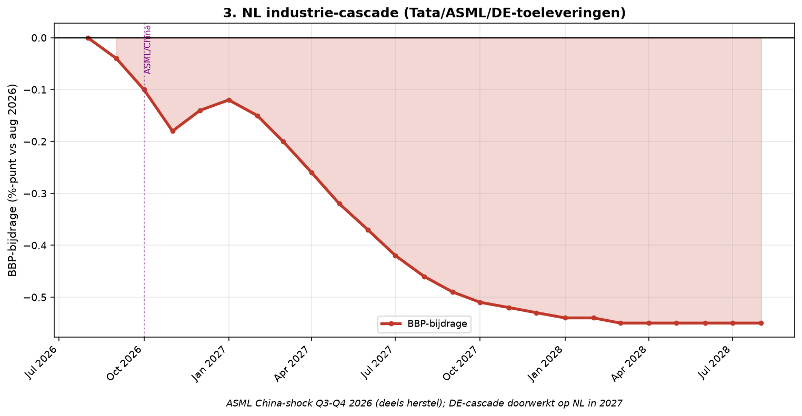

Element 3 — Nederlandse industrie-cascade
Breuk-element 3 van 28 in de systeemanalyse Nederland aug 2026 – aug 2028.
Door Jacobus van Merksteijn

Grafiek: Nederlandse industrie-cascade.
3.1 Kritische feiten
De Nederlandse industrie is niet één sector maar een cluster van
hoog-technologische bedrijven die elk hun eigen kwetsbaarheid hebben. De
grootste zeven en hun risico's:
-----------------------------------------------------------------------
Bedrijf Aandeel Kwetsbaarheid**
werkgelegenheid**
----------------------- ----------------------- -----------------------
Tata Steel IJmuiden 9.000 banen €2 mrd staatssteun apr
2026 (Kamer akkoord);
afhankelijk DE-auto
VDL-Nedcar 4.000 banen BMW-order beëindigd
2024; geen structurele
opvolger
ASML ~8.000 banen NL ~20% omzet uit China;
(indirect via keten) VS-Congres restricties
dreiging
Signify (Eindhoven) 1.500 banen LED-vraag industrieel
daalt met DE-krimp
DAF Trucks (Eindhoven) 300 banen Vrachtvraag daalt;
concurrentie MAN/Scania
Bosch NL ~2.000 banen Cascade DE-moeder
(Boxtel/Tilburg)
Groningse gasketen ~5.000 banen totaal Afhankelijk industriële
gasvraag (NL+DE)
-----------------------------------------------------------------------
Direct getroffen bij cascade: ~21.600 banen. Multiplicator 3-5× voor NL
(kleinere lokale toeleverkring dan DE): ~65-100k banen indirect. Effect
op BBP: -0,50-0,60% via directe krimp, -0,30% via multiplicator =
-0,80-0,90% totaal --- maar niet volledig binnen 2-jaars-horizon.
3.2 Specifieke ontwikkelingen 2026
Tata Steel IJmuiden:
Op 20 apr 2026 stemde de Tweede Kamer met beperkte meerderheid in met €2
miljard staatssteun aan Tata Steel, gericht op groen-staal-transitie via
Direct Reduced Iron (DRI) technologie gecombineerd met elektrische
boogovens. Voorwaarden: emissiereductie 40% tegen 2030, behoud
werkgelegenheid, geen dividend-uitkering aan Indiase moeder Tata Sons
voor 2035. Investeringsbesluit Tata verwacht medio 2026 (Energeia juni
2026). Zonder investeringsbesluit: geen groene staal, oude
cokesfabrieken blijven draaien, milieuvergunning-crisis komt terug.
ASML:
ASML rapporteerde 28 juli 2026 een aandelen-daling nadat het VS-Congres
een wetsvoorstel aankondigde om exportrestricties op
halfgeleider-productieapparatuur naar China verder aan te scherpen (SCE
Trader). ASML omzet naar China ~20% van totaal. JPMorgan noemde reactie
"buiten proportioneel" --- aandeel herstelde deels. Kernvraag voor
2027: krijgen ASML DUV-machines (Deep Ultra Violet, niet-EUV) alsnog
exportverbod naar China? Dat zou €4-6 mrd omzet raken.
VDL-Nedcar (Born, Limburg):
Nedcar produceerde tot 2024 voor BMW (MINI-modellen). Contract eindigde.
Sinds 2024 geen structurele nieuwe klant, alleen kleine batch-orders
voor Rivian, Lynk & Co en Xpeng. Werkgelegenheid terug van 4.500 (2023)
naar ~4.000 (2026). Zonder grote klant voorjaar 2027 realistisch:
faillissement of doorstart in kleinere vorm. Regio Zuid-Limburg extra
kwetsbaar.
3.3 Bronnen
• Dutch News apr 2026: Kamer akkoord €2 mrd Tata Steel --- https://www.dutchnews.nl/2026/04/mps-agree-to-back-e2b-for-tata-steel-under-stricter-conditions/ • Energeia juni 2026: Tata Steel investeringsbesluit --- https://energeia.nl/tata-steel-juni-2026-meer-duidelijkheid-over-investering/ • Reuters apr 2026: ASML-aandelen dalen op VS-China-restricties dreiging --- https://www.reuters.com/world/china/asml-shares-fall-us-congress-plan-further-restrict-china-exports-2026-04-07/ • SCE Trader 28 juli 2026: JPMorgan-analyse ASML --- https://www.scetrader.nl/asml/28/07/2026/asml-lager-op-china-zorgen-maar-jpmorgan-noemt-reactie-buiten-proportioneel/
{width="6.5in" height="3.3736876640419946in"}
*NL industrie-cascade: ASML China-shock Q3-Q4 2026; DE-doorwerking 2027;
plateau -0,55%*